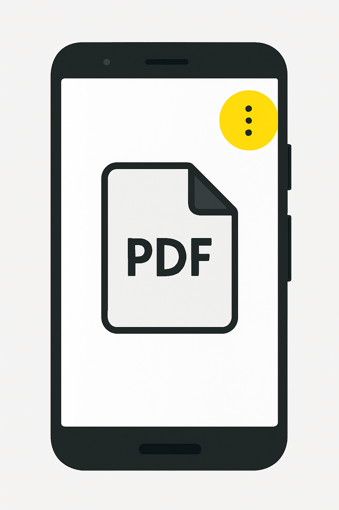

- Open your email app and select the message with the PDF.
- Tap the attachment to preview it, then tap the three‑dot menu icon.
- Select "Print" or "Save as PDF," then choose "Save as PDF".
- Open the saved PDF (in Downloads or Files) and fill out the form fields.
- Open Adobe Fill & Sign (or similar), tap the fountain pen icon, create your signature and place it on the form.
- Share or send the completed form back via email or message.
Using an Android
